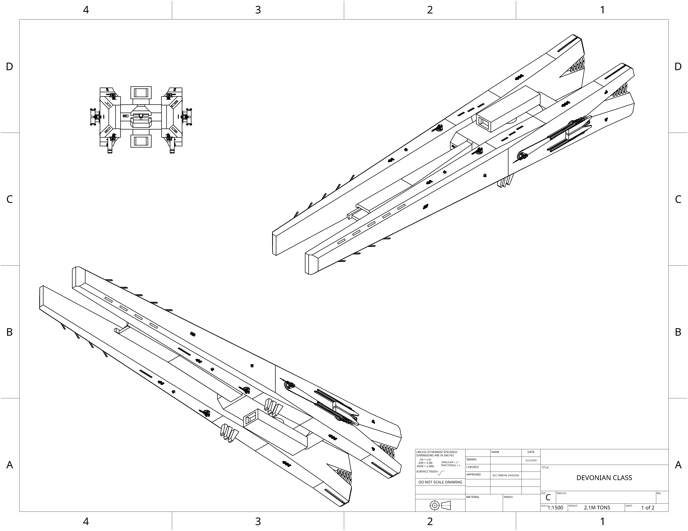

home
ECC Devonian class Destroyer:
Combat interdictor ship, armed with a medium accuracy weaponized micro jump gate, six high acceleration lateral
launch missile ports, four coilgun emplacements and two lateral ports for launching long range, medium acceleration missiles. Utilizing a
folding radiator panel design, this ship is able to lower its target profile when under fire.

- Main armament:ECC Electromagnetic payload jump-gate
- Secondary armerment:ECC HESC missiles
- Secondary armerment:ECC LOSW Gauss
- Point defense complement:x6 ECC PDL
- Point defense complement:x2 ECC RAVEN emplacement
- Shielding capabilities: 300 TerraJoules
- Sensor complement: R700 internal array
- In Atmosphere Acceleration(G): x1.7 Forward x1.7 Back
- Heat dissipation rate: X1.7-X3 GiggaWatt
- Tonnage: 2.1M Metric tons